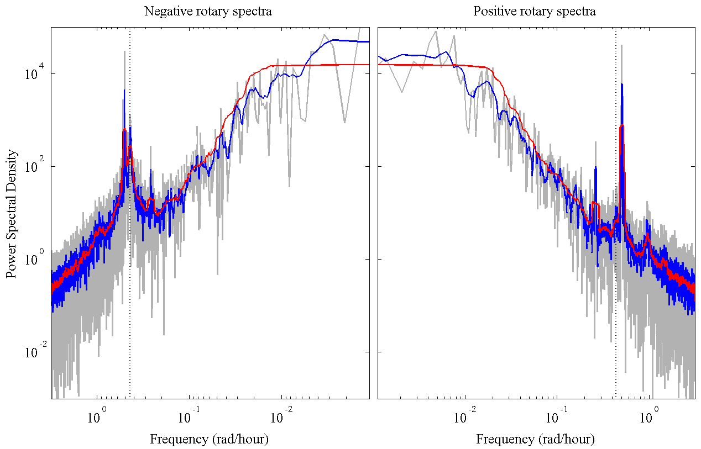

MSPEC Multitaper power and cross spectra.
_______________________________________________________________________

_______________________________________________________________________
MSPEC implements spectral and cross-spectral analysis using the
multitaper method for real or complex-valued data.
MSPEC is to be run after calling SLEPTAP to compute the multitapers.
_______________________________________________________________________
One-sided power spectrum
[F,S]=MSPEC(X,PSI) returns the one-sided power spectrum of X at
positive frequencies using data tapers PSI.
Input:
X -- M x N matrix containing N length M time series
PSI -- M x K matrix of K data tapers
Output:
F -- [M/2] nonnegative *radian* frequencies
S -- [M/2] x N one-sided power spectrum matrix
In the above, [M/2] means: M/2 if M is even, and (M+1)/2 if M is odd.
See FOURIER for the calculation of the Fourier frequencies.
The spectra matrices are averages over the K "eigenspectra" computed
with each of the K tapers, as discussed in Park et al. JGR 1987.
The one-sided spectrum S is normalized such that its sum over all
frequencies F, (1/2/pi)*SUM(S,1)*DF where DF is the frequency
increment, approximates the signal variance; see discussion below.
MSPEC(...,'detrend') detrends the data before computing the spectra.
______________________________________________________________________
Cross-spectra of real-valued data
MSPEC can be used to compute the cross-spectrum of two real-valued
time series or sets of time series.
[F,SXX,SYY,SXY]=MSPEC(X,Y,PSI); --- For cross-spectra
Input:
X -- M x N matrix containing N length M time series
Y -- M x N matrix containing N length M time series
PSI -- M x K matrix of K data tapers
Output:
F -- M/2 nonnegative frequencies
SXX -- [M/2] x N one-sided spectra of X
SYY -- [M/2] x N one-sided spectra of Y
SXY -- [M/2] x N one-sided cross spectra of X and Y
See TWOSPECPLOT for plotting SXX and SYY simultaneously.
______________________________________________________________________
Rotary spectra of complex-valued data
MSPEC can also the so called "rotary spectra" of complex-valued
time series or sets of time series.
[F,SPP,SNN,SPN]=MSPEC(Z,PSI); --- For rotary spectra of Z=X+iY
Input:
Z -- M x N matrix containing N length M time series
PSI -- M x K matrix of K data tapers
Output:
F -- M/2 nonnegative frequencies
SPP -- [M/2] x N positively rotating power spectrum matrix
SNN -- [M/2] x N negatively rotating power spectrum matrix
SPN -- [M/2] x N rotary cross spectral matrix
Note that the rotary spectra are defined such that SXX+SYY=SPP+SNN.
The rotary spectra SPP and SNN are normalized such that the sum of SPP
over all frequencies plus that of SNN approximates the variance of Z.
See TWOSPECPLOT for plotting SPP and SNN simultaneously.
______________________________________________________________________
Sample rate
[F,S]=MSPEC(DT,...) specifies the sample interval to be used in the
calculation of the frequency array F. DT defaults to unity.
Spectral values depend linearly upon the sample rate in order that the
integral of the spectra over frequency approximate the variance.
______________________________________________________________________
Periodogram
MPSEC can be used to form the naive spectral estimator, known as the
periodogram. Although this is not generally a good way to estimate the
spectrum, it can be useful as a comparision.
MSPEC(X,[]) or MSPEC(X,Y,[]) with PSI empty uses the default, or boxcar
taper, normalized to unit energy. This returns the periodogram.
______________________________________________________________________
Normalizations
By default, MSPEC uses *radian* frequency as in cos(f t). Optionally
MSPEC(,...,'cyclic') will use *cyclic* frequency, as in cos(2 pi f t).
MSPEC is normalized such that with DT=1, its sum will approximately
recover the time series variance. For the MSPEC periodogram, this
recovery is exact, such that [F,S]=MSPEC(X,[]) gives SUM(S)=STD(X).^2.
[F,SPP,SNN]=MSPEC(Z,[]) with unit DT and complex-valued Z also recovers
exactly the variance of Z, but with modifications as follows:
SUM(SPP)+SUM(SNN(2:end)) = STD(Z).^2 -- Odd time series length M
SUM(SPP)+SUM(SNN(2:end-1)) = STD(Z).^2 -- Even time series length M
These modifications are necessary because the rotary spectra duplicates
the zero frequency on the negative side when M is odd, and duplicates
both the zero frequency and the Nyquist when M is even.
______________________________________________________________________
Cross-spectra of complex-valued data
To compute the cross-spectra of two complex-valued time series or sets
of time series Z1 and Z2, run MSPEC repeatedly.
[F,SP1P1,SP2P2,SP1P2]=MSPEC(Z1,Z2,PSI);
[F,SN1N1,SN2N2,SN1N2]=MSPEC(CONJ(Z1),CONJ(Z2),PSI);
The first call returns the spectra and cross-spectra of Z1 and Z2 at
positive frequencies, while the second returns their spectra and cross-
spectra at negative frequencies. Finally
[F,SP1P1,SN2N2,SP1N2]=MSPEC(Z1,CONJ(Z2),PSI);
returns the cross-spectra between the positive rotary components of Z1
and the negative components of Z2.
______________________________________________________________________
Adaptive spectra
MSPEC(...,LAMBDA,'adaptive'), where LAMBDA contains the eigenvalues of
the tapers as computed by SLEPTAP, alternately uses the "adaptive"
multitaper method of Thomson (1982).
This implementation follows that of Park et al. (1987a), JGR.
For cross-spectra or for rotary spectra, the weights appearing in the
adaptive spectra are derived for the total spectrum of each signal
compoment, that is for SXX+SYY or SPP+SNN as appropriate. Then the
separate spectra and co-spectra are computed using identical weights.
______________________________________________________________________
Cell array input / output
MSPEC generates cell array output given cell array input.
Let's say one has P different time series, X1, X2,..., XP. Put these
into a cell array X{1}=X1, X{2}=X2, ..., X{P}=XP, and then use
'[psi,lambda]=sleptap(cellength(x))' to make a cell array of tapers.
[F,S]=MSPEC(X,PSI) then returns cell arrays F and S corresponding
to the Fourier frequencies and spectra of the P arrays.
The other argument forms given above also work. In particular,
specifiying the sample time through MPSEC(DT,...) works, with DT either
a scalar or an array of the same length as the cell array X.
The spectra can then be plotted with CELLPLOT(F,S), or TWOSPECPLOT for
a pair of output spectra.
______________________________________________________________________
Example
The example at the top of this help file shows clockwise (left) and
counterclockwise (right) rotary spectra from moored current meter
measurements of the ocean currents in the Labrador Sea.
The periodogram is in gray, and blue and red are multitaper spectra
with P=4 and P=32, respectively. The local Coriolis frequency is
marked with a dashed line. Tidal and inertial peaks are apparent.
The main point of this figure is to show that increasing P increases
the degree of frequency-domain smoothing.
______________________________________________________________________
'mspec --t' runs some tests.
'mspec --f' generates the above sample figure from Bravo mooring data.
See also: SLEPTAP, HERMFUN, MTRANS, MSVD, TWOSPECPLOT.
Usage [f,s]=mspec(x,psi);
[f,s]=mspec(dt,x,psi);
[f,spp,snn,spn]=mspec(z,psi);
[f,sxx,syy,sxy]=mspec(x,y,psi);
_________________________________________________________________
This is part of JLAB --- type 'help jlab' for more information
(C) 2000--2015 J.M. Lilly --- type 'help jlab_license' for details